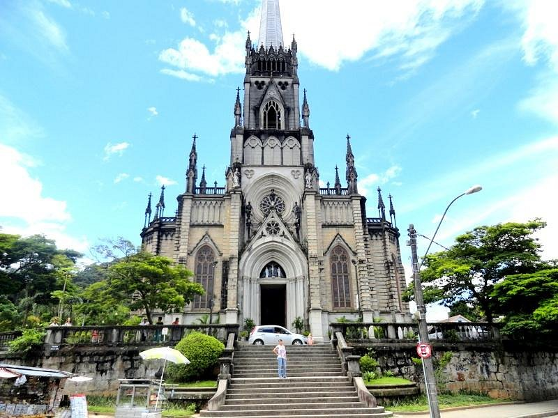

PETRÓPOLIS
Venha conhecer a cidade imperial
Atrações Históricas
Petrópolis é a Cidade Imperial do Brasil. Aqui você pode visitar o Museu Imperial, antiga residência de Dom Pedro II, conhecer o imponente Palácio de Cristal e se encantar com a Catedral de São Pedro de Alcântara, onde estão os restos mortais da família imperial.
Eventos
A cidade é palco de grandes eventos culturais, como o Festival de Inverno, que reúne música e arte, a Bauernfest, com danças e comidas típicas alemãs, e o Natal Imperial, quando Petrópolis se ilumina e encanta turistas de todo o país.
Gastronomia
Entre os sabores da serra estão as cervejarias artesanais, os pratos típicos da culinária alemã, como salsichões e joelho de porco, e os charmosos cafés coloniais. Uma experiência gastronômica única em cada esquina da cidade.
Na aréa Leste da Cidade
Museu Imperial

O Museu Imperial é uma das principais atrações de Petrópolis, oferecendo um mergulho na história do Brasil Imperial. Localizado no antigo Palácio de Verão de Dom Pedro II, o museu abriga um vasto acervo de artefatos, mobiliário e documentos que retratam a vida da família imperial e o contexto histórico da época.
Palácio de Cristal

O Palácio de Cristal é um dos marcos arquitetônicos de Petrópolis, construído em 1884. Inspirado no Palácio de Cristal de Londres, o edifício é feito inteiramente de ferro e vidro, proporcionando um ambiente único para eventos culturais, exposições e feiras. Localizado no centro da cidade, o palácio é cercado por belos jardins, tornando-se um local perfeito para passeios e fotos.
Catedral São Pedro de Alcântara
A Catedral de São Pedro de Alcântara é um dos principais pontos turísticos e religiosos de Petrópolis. Construída em estilo neogótico, a catedral impressiona por sua arquitetura imponente e detalhes artísticos, como vitrais coloridos e esculturas. Além de ser um local de culto, a catedral também abriga os restos mortais da família imperial brasileira, incluindo Dom Pedro II e Dona Teresa Cristina, tornando-se um importante símbolo histórico da cidade.
Na aréa Oeste da Cidade
Parque Nacional da Serra dos Órgãos

O Parque Nacional da Serra dos Órgãos é um paraíso para os amantes da natureza e aventura. Com trilhas que variam em dificuldade, o parque oferece vistas deslumbrantes das montanhas, cachoeiras e uma rica biodiversidade. É o local ideal para caminhadas, escaladas e observação de aves, proporcionando uma experiência única em meio à natureza exuberante.
Cascata do Véu da Noiva

A Cascata do Véu da Noiva é uma das quedas d'água mais famosas de Petrópolis, localizada em um cenário natural deslumbrante. A trilha até a cascata é acessível e oferece uma caminhada agradável pela mata atlântica. Ao chegar, os visitantes são recompensados com a vista impressionante da água caindo em um formato que lembra um véu, criando um ambiente perfeito para fotos e momentos de contemplação.
Fazenda Samambaia

A Fazenda Samambaia é uma atração imperdível para quem visita Petrópolis, oferecendo uma experiência autêntica da vida rural na região. Localizada em meio a belas paisagens, a fazenda proporciona atividades como passeios a cavalo, trilhas ecológicas e contato com animais. Além disso, os visitantes podem desfrutar de uma deliciosa comida caseira, preparada com ingredientes frescos da própria fazenda, tornando a visita ainda mais especial.